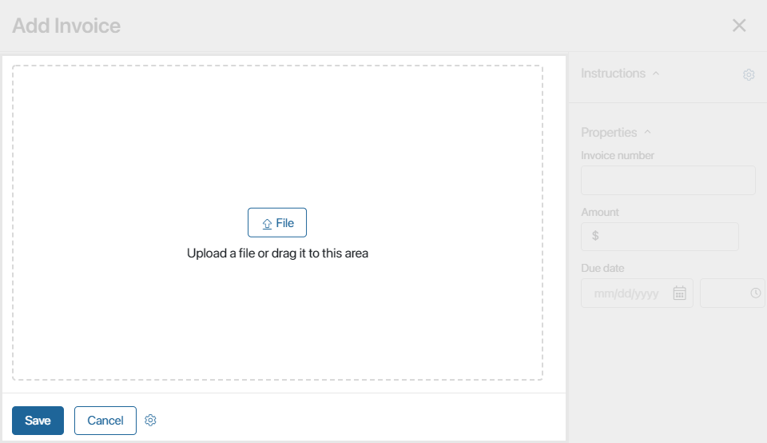
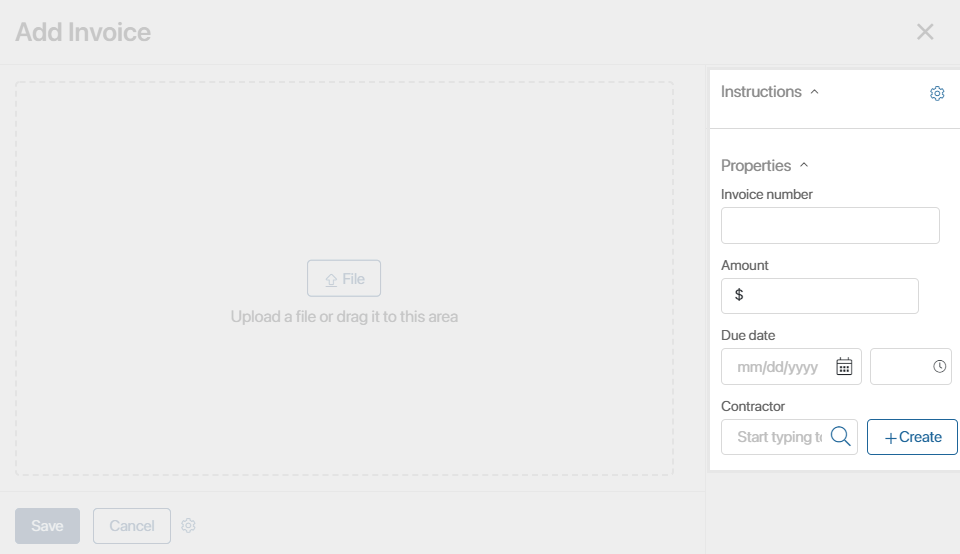
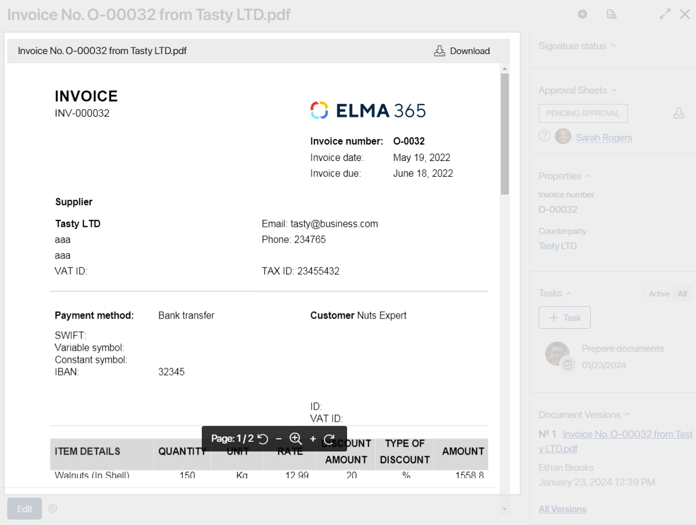
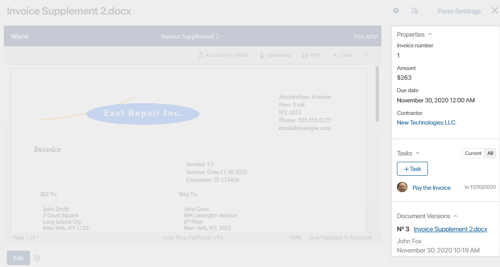
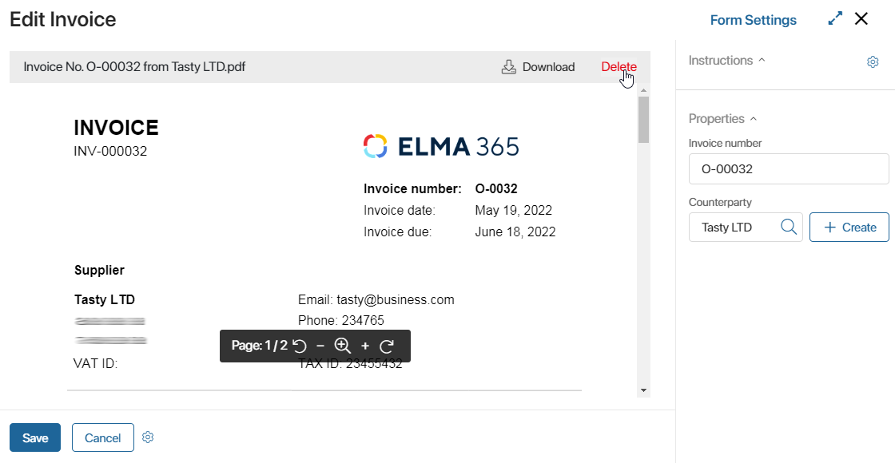

The form of a Document app item contains detailed information about the document. You can configure different page configurations for different document types. The form is set up when the app is created.
начало внимание
Only users included in the Administrators group can set up app item forms.
конец внимание
There are different types of forms: for creating, viewing, and editing a document.
Create form
The create form opens when a user adds a new item of the Document type.
The main area of the form is intended for file upload.

The sidebar features document properties. The set of fields is configured when the app is created.

View form
The view form opens when a user goes to the app page and clicks a document’s name.

- The main area of the form shows the preview of the file added when creating the document.
- The toolbar includes the following options:
- Download. Download the file to your computer.
- Edit. Modify the document’s text. This button is available for users with editing permissions in the app. Whether the control is shown is managed by the administrator in the widget settings on the item form. Editing files directly in the system requires an integration with a file viewing and editing service.
- Print. Download or print the document with a watermark. This control is available only if the Print form option is set up in the app.
- Share. Copy the file link. The system administrator can enable the button display in the Buttons: Download and Edit widget settings. Only a user with the file and app items access permissions can download the file using the link.
- You can rotate a document page in the .pdf format using the panel at the bottom of the viewing area.
- If a folder tree is set up in the app, you can move the app item from one folder to another. To do that, click on the pencil icon in the top left corner of the form, select a folder and click Move.
- Controls in the top right corner allow you to:
- Send the document for information or for approval.
- Add a document version.
Next to these button you can see a link that will take you to form configuration. Click it and switch to the advanced mode to customize the form.

- The sidebar displays the following:
- Information that users entered when they created the document, as well as the tasks and the activity stream associated with the document.
- All added versions of the document. You can perform the following actions with them:
- Download.
- Print the version file. If watermark printing is enabled, the current version is printed with it and other versions — without the watermark.
- Compare versions. This option is available for .doc and .docx files.
- When configuring the form in the advanced mode, you can add widgets for displaying:
- The document registration button.
- Status of the app item.
- Approval sheets and lists of informed users.

Edit form
To open the edit form, go to the app page and click on the document’s name. In the window that opens, click Edit in the bottom left corner.
On the edit form, you can remove the file by clicking Delete and replace it with a new one, or edit the information in the fields in the sidebar.

You can configure the layout of this form in the advanced mode when creating the Document type app.
Found a typo? Select it and press Ctrl+Enter to send us feedback